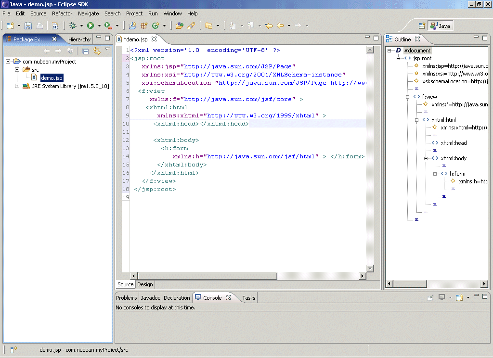

XMLEspresso 6.0.0 Eclipse Plugin
What is new in version 6.0.0?
The following features are new in version 6.0.0:
- Version 6.0.0 supports editing of DTD and CSS documents.
- The default edit mode in XML document source view is Text Mode
with complete support for intelligent content assist, free-form editing,
automatic background parsing, and well-formed document error reporting.
- XML Mode with
restricted editing capabilities is also available. We recommend Text Mode
for normal editing during development; XML Mode is ideal for lock down
editing during change control.
- The intelligent content assist algorithms have been made smarter
and easier to use. For example, if multiple required sub-elements are missing,
content assist will show only the next required element that is missing.
- You can add new name space qualified schema locations (http://www.w3.org/TR/xmlschema-1/#xsi_schemaLocation)
within the document on the fly and those schemas will be automatically added
to the document schemas, after your refresh the document.
- Many new entries in the builit-in catalog, including JavaEE 5 documents.
- Improved user interface.
Key Features
XMLEspresso 6.0.0 is a full featured editor for creating and maintaining
XML documents.
Its important features include:
- It supports both standalone and grammar based documents.
- It supports Document Type Definition (DTD) and W3C XML Schema grammars.
- To simplify the creation of commonly used XML documents, there is a built-in,
extensible catalog of XML grammars.
- Creation of an XML document is strongly guided
by the underlying grammar and the editor makes a continual effort to
maintain the document as a well-formed XML document.
- Every XML document when opened has a deisgn view and a source view.
Both views are completely integrated and observe and react to changes in either view.
- Each XML document can be validated against its DTD or W3C XML Schema.
- An XML document can be saved as a PDF document.
- An XML DTD can be saved as an XML Schema.
- Related documents can be grouped under a project.
- Multiple documents can be edited simultaneously within a project. However,
only one project can be open at a time.
- It supports context sensitive pop-ups for
inserting sub-element tags and for defining attributes.
Figure 1.0 NuBean XMLEspresso 6.0.0 Plugin
|

|